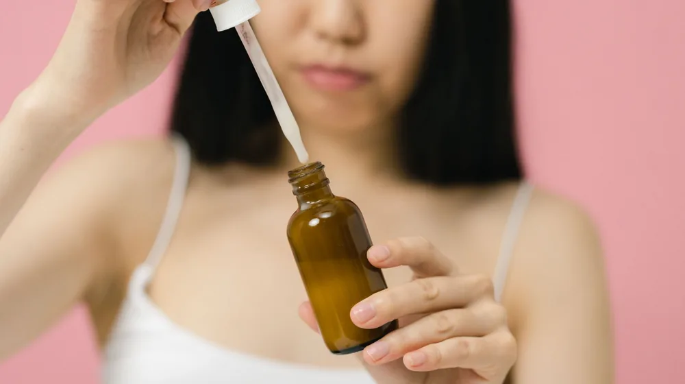

저자극 화장품 성분표, 이것만 알면 실패 없다: 핵심 성분 확인법 5가지
사진: cottonbro studio / Pexels (무료 이미지, 출처 표기)
왜 저자극 화장품 성분표 읽기가 중요할까?

화장품 성분표는 단순히 나열된 화학 물질의 목록이 아닙니다. 내 피부에 어떤 영향을 미칠지, 안전하게 사용할 수 있는지를 미리 알려주는 중요한 정보원입니다. 특히 민감성 피부라면 특정 성분에 강하게 반응하여 트러블을 유발할 수 있으므로, 성분표를 꼼꼼히 확인하는 것이 중요합니다.
잘못된 제품 선택은 피부 장벽 손상으로 이어져 악순환을 만들 수 있습니다. 따라서 제품 구매 전 성분표를 읽는 습관을 들이면 불필요한 시행착오를 줄이고, 나에게 꼭 맞는 '인생템'을 찾는 데 큰 도움이 됩니다.
피해야 할 대표적인 자극 성분 3가지
모든 성분이 모든 사람에게 자극적인 것은 아니지만, 일반적으로 민감성 피부에 자극을 줄 수 있다고 알려진 성분들이 있습니다. 이 성분들은 화장품 사용 시 주의 깊게 살펴보아야 합니다.
다음은 2026년 8월 기준, 일반적으로 주의가 필요한 성분들입니다. 제품에 따라 배합 농도가 달라 자극도가 다를 수 있으니 참고용으로 활용하세요.
- 인공 향료 (Fragrance, Parfum): 향을 내기 위해 사용되며, 다양한 화학 물질의 조합입니다. 민감성 피부에는 알레르기 반응이나 접촉성 피부염을 유발할 수 있어 피하는 것이 좋습니다.
- 합성 색소 (CI Numbers): 제품의 시각적 효과를 위해 첨가됩니다. 'CI 77491', 'CI 77492'와 같은 형태로 표기되며, 일부 피부에 자극을 주거나 알레르기 반응을 일으킬 수 있습니다.
- 변성 알코올 (Alcohol Denat., Ethanol): 즉각적인 청량감과 빠른 흡수감을 주지만, 장기적으로는 피부 수분을 빼앗아 건조함과 자극을 유발할 수 있습니다. 건성 및 민감성 피부는 피하는 것이 좋습니다.
이 외에도 파라벤, 페녹시에탄올 등 방부제 성분이나 일부 계면활성제 역시 민감성 피부에는 주의가 필요할 수 있습니다.
찾아야 할 저자극 핵심 성분 5가지
피해야 할 성분만큼이나 중요한 것은 내 피부에 유익하고 저자극적인 성분을 찾는 것입니다. 다음은 민감성 피부를 진정시키고 피부 장벽 강화에 도움을 줄 수 있는 대표적인 성분들입니다.
이 외에도 알란토인, 스쿠알란, 베타글루칸 등 다양한 성분들이 저자극 및 보습, 진정 효과를 제공할 수 있습니다.
헷갈리는 성분 용어, 이것만 알아두세요
화장품 성분표에는 알 수 없는 화학 용어들이 가득합니다. 하지만 몇 가지 핵심 용어만 이해해도 성분표를 훨씬 쉽게 읽을 수 있습니다.
- 전성분 (Ingredients): 제품에 함유된 모든 성분을 함량 순서대로 나열한 것입니다. 일반적으로 함량이 높은 성분이 앞에 위치하고, 1% 미만 함유 성분은 순서와 관계없이 기재할 수 있습니다.
- 천연 유래 성분 (Naturally Derived Ingredients): 자연에서 얻은 원료를 최소한의 가공을 거쳐 만든 성분입니다. '천연'이라는 말이 무조건 '저자극'을 의미하지는 않으므로 주의가 필요합니다.
- 무첨가 (Free From): 특정 성분을 넣지 않았다는 의미입니다. 예를 들어 '무향료(Fragrance-Free)', '무파라벤(Paraben-Free)' 등으로 표기됩니다.
- 논코메도제닉 (Non-comedogenic): 모공을 막아 여드름을 유발할 가능성이 낮은 제품임을 의미합니다. 여드름성 피부라면 이 문구를 확인하는 것이 좋습니다.
식품의약품안전처(식약처)는 화장품 전성분 표시 제도를 통해 소비자들이 안전하게 제품을 선택할 수 있도록 정보를 제공하고 있습니다. 궁금한 성분은 식약처 화장품 성분 사전 등을 활용해 추가 정보를 찾아볼 수 있습니다.
성분표 외에 저자극 화장품 고르는 추가 팁
성분표 확인만큼이나 중요한 것이 실제 제품 사용 경험과 외부 정보 확인입니다. 다음 팁들을 활용하여 더욱 현명한 선택을 해보세요.
- 샘플 또는 소용량 먼저 사용: 아무리 좋은 성분이라도 내 피부에 맞지 않을 수 있습니다. 본품 구매 전 샘플이나 소용량 제품을 먼저 사용해보고, 며칠간 피부 반응을 지켜보는 것이 좋습니다.
- 피부과 테스트 완료 제품 확인: '피부과 테스트 완료(Dermatologist Tested)' 문구는 해당 제품이 피부과 전문의 감독 하에 테스트를 거쳤음을 의미합니다. 완전히 자극이 없다는 보장은 아니지만, 안정성을 높이는 요소로 볼 수 있습니다.
- 사용 후기 참고: 나와 비슷한 피부 타입을 가진 사람들의 솔직한 사용 후기를 참고하는 것도 좋은 방법입니다. 단, 개인차가 크므로 맹신하기보다는 여러 후기를 종합적으로 판단하세요.
- 특정 알레르기 성분 확인: 본인이 특정 성분에 알레르기 반응을 보이는 것을 알고 있다면, 반드시 해당 성분이 없는지 성분표를 꼼꼼히 확인해야 합니다.
저자극 화장품은 단순히 성분이 적은 제품이 아니라, 피부에 필요한 성분을 효과적으로 전달하고 유해할 수 있는 성분을 배제한 제품입니다.
나에게 맞는 저자극 화장품, 이렇게 찾아보세요
저자극 화장품을 찾는 여정은 '나의 피부 알기'에서 시작됩니다. 자신의 피부 타입(건성, 지성, 복합성)과 민감성 여부, 특정 트러블 유발 성분을 정확히 파악하는 것이 우선입니다. 이후 이 글에서 제시된 피해야 할 성분과 찾아야 할 성분 목록을 기준으로 제품 성분표를 분석하는 습관을 들이세요.
처음에는 어렵게 느껴질 수 있지만, 몇 번 반복하다 보면 핵심 성분들이 눈에 들어오기 시작할 것입니다. 2026년 8월 기준, 화장품 정보 앱이나 웹사이트를 활용하면 성분 분석 정보를 쉽게 얻을 수도 있습니다. 꾸준히 관심을 갖고 노력한다면, 당신의 피부에 가장 잘 맞는 저자극 화장품을 반드시 찾을 수 있을 것입니다.
🔗 이 글도 함께 보면 좋아요: 전통주 초보 탈출? 이 용어만 알면 전문가 됩니다 (핵심 7가지)
관련 추천 상품
저자극 화장품, 민감성 피부 화장품 관련 인기 상품 보러가기
이 포스팅은 쿠팡 파트너스 활동의 일환으로, 이에 따른 일정액의 수수료를 제공받습니다.